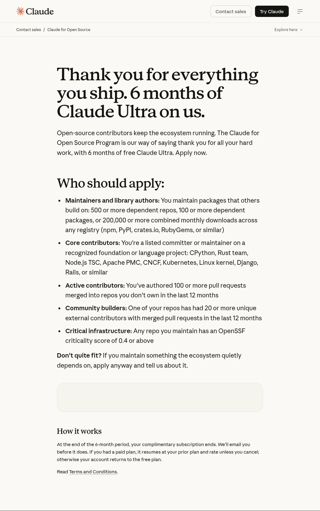

6 months free.
Here’s how to apply.
Commented LINK on my reel? You’re in the right place. Claude’s Open Source Program offers six months of free Claude Ultra to eligible open source contributors.
ആദ്യം eligibility നോക്കൂ. യോഗ്യതയുണ്ടെങ്കിൽ താഴെയുള്ള official link വഴി apply ചെയ്യാം. Approval ഉറപ്പല്ല.
Open the official application →Check if you qualify
This is for open source maintainers and contributors. You need real project or contribution history. Approval is not guaranteed.
Who can apply? See the official criteria
- Maintainers / library authors: packages with 500+ dependent repos, 100+ dependent packages, or 200,000+ combined monthly downloads across registries.
- Core contributors: listed committers or maintainers on recognized foundation or language projects, such as CPython, Rust, Node.js TSC, Apache PMC, CNCF, Kubernetes, Linux, Django or Rails.
- Active contributors: 100+ authored pull requests merged into repositories you do not own in the last 12 months.
- Community builders: a repository with 20+ unique external contributors whose pull requests were merged in the last 12 months.
- Critical infrastructure: a repository you maintain with an OpenSSF criticality score of at least 0.4.
Don’t quite fit? Anthropic also invites people maintaining projects the ecosystem quietly depends on to explain their impact.

Open the application
Open Claude’s official form →. If it doesn’t load inside Instagram, open it in Chrome or Safari. Keep your GitHub profile, project link and contribution evidence ready.
Explain your work in plain English
Say what your project does, what you contribute, who it helps, and how you would use Claude. Add links that support your claims.
Example response
Fictional example to show the style. Use your own project, numbers and links. This is not a verified form question.
I maintain OpenRead, an open source tool that helps libraries make scanned documents searchable. I fix bugs, review contributions and maintain the documentation. Our package receives 220,000 monthly downloads; the project and download statistics are linked below. I would use Claude to help draft regression tests for document-parsing bugs and improve setup instructions for new contributors. I would review and test all suggested changes before publishing them.
Project: [your project URL]
My profile: [your GitHub URL]
Evidence: [your statistics or contribution URL]
Copy this prompt
Help me write a short, clear response for the Claude for Open Source application. Use simple English and only my real facts. Explain my project, my contribution, evidence of its impact, and how Claude would help. Do not invent numbers or claim I qualify. Ask me for missing information before drafting. Follow the actual question and word limit below. Project name and link: [add here] What it does and who it helps: [add here] My role and contributions: [add here] Eligibility route and supporting evidence links: [add here] How I would use Claude: [add here] Application question and word limit: [paste here]
How to use the prompt
Tap Copy, paste it into ChatGPT or Claude, and replace the brackets with your details. Answer any follow-up questions. Check the draft, then adapt it to the actual application question. You do not need a paid plan to prepare your response.
Check, submit, then watch your email
Remove all brackets, check your links, and make sure every claim is true. Follow the official form’s instructions and keep any confirmation. Submitting is an application; access is not guaranteed and no response time is promised here.
After six months: Anthropic says it will email you before the complimentary subscription ends. A previous paid plan resumes at its prior plan and rate unless you cancel; otherwise the account returns to the free plan.
Check eligibility & apply →Sources & community advice
Offer and eligibility checked against the official Claude page on 2 November 2026. The response templates are our writing suggestions.
Browse Reddit discussions for personal experiences. We could not verify readable discussions, so no Reddit recommendations are quoted here. Individual approval stories do not change the official criteria.